Edición de imágenes¶
Edición de imágenes¶
Modos de color¶
Llamamos modos de color a las distintas formas en que una imagen puede representar los colores.
Cada modo utiliza una combinación diferente de valores o componentes para definir el color de cada punto (píxel) de la imagen.
Elegir el modo adecuado depende del uso que vayamos a dar a la imagen: mostrarla en pantalla, guardarla para la web o prepararla para imprimir.
Los principales modelos son:
- Es el modo de color más utilizado para imágenes que se ven en pantallas.
- Se basa en la mezcla de los colores Rojo, Verde y Azul.
- Cada color tiene valores entre 0 y 255, permitiendo millones de colores.
- Es el modo más adecuado para fotografías e imágenes digitales.
- Se utiliza en imágenes para Internet como GIF y PNG.
- Permite un máximo de 256 colores.
- Uno de los colores puede ser transparente.
- Reduce el tamaño del archivo.
- Elimina la información de color.
- Utiliza solo tonos entre blanco y negro.
- Se usa en fotografías en blanco y negro.
- También se emplea para efectos artísticos.
- Se utiliza para imágenes destinadas a imprentas.
- Está basado en la mezcla de pigmentos.
- Sus colores son Cian, Magenta, Amarillo y Negro.
- No está soportado actualmente por GIMP.
- Describe el color de forma más visual.
- H (Tono): color básico, de 0º a 360º.
- S (Saturación): intensidad del color, de 0% a 100%.
- V (Brillo): luminosidad del color, de negro a blanco.
- Muy usado en GIMP para ajustar colores.
Paleta de color GIMP¶
Desde la Caja de herramientas puedes acceder a las distintas paletas desde donde elegir un color sólido (RGB) con el que pintar.
Esta paleta es la que usa GIMP por defecto y tiene el siguiente aspecto.

Podemos distinguir zonas comunes a todas las paletas y zonas específicas de cada una de ellas. La específica de cada modo es la que se sitúa en el cuadrado de color, justo debajo de las pestañas de acceso al modo de elección de color.
Las comunes son las siguientes:
- Pestañas para acceder a los otros tipos de paleta.
- Zona específica de cada paleta de color.
- Elección directa conociendo tono, saturación y brillo (por HSV).
- Elección directa conociendo la cantidad de cada color (por RGB).
- Introducción del valor hexadecimal o Notación HTML.
- Cuentagotas para elegir cualquier color de la pantalla, esté en GIMP o en cualquier otro programa abierto en ese momento.
- Colores recientemente utilizados.
- Comparación entre los colores actual y anterior.
Para la elección de un color puedes utilizar cualquiera de las zonas marcadas, primero eliges el tono y luego su saturación y brillo. Otra opción es introducir los valores de cada color RGB o de HSV (en español sería TSB, Tono, Saturación y Brillo) o el valor hexadecimal; este valor corresponde a la expresión en hexadecimal de los valores en decimal correspondientes a R (rojo), G (verde) y B (azul).
Actividad
📝 AA5.2 Color¶
(C.ESP2 / CE2.3 / IC1-3p)
El objetivo de esta práctica es aprender a hacer selecciones de partes concretas de una imagen para aplicarle cambios relacionados con el color. La práctica consiste en cambiar el color de labios y pelo a una persona.
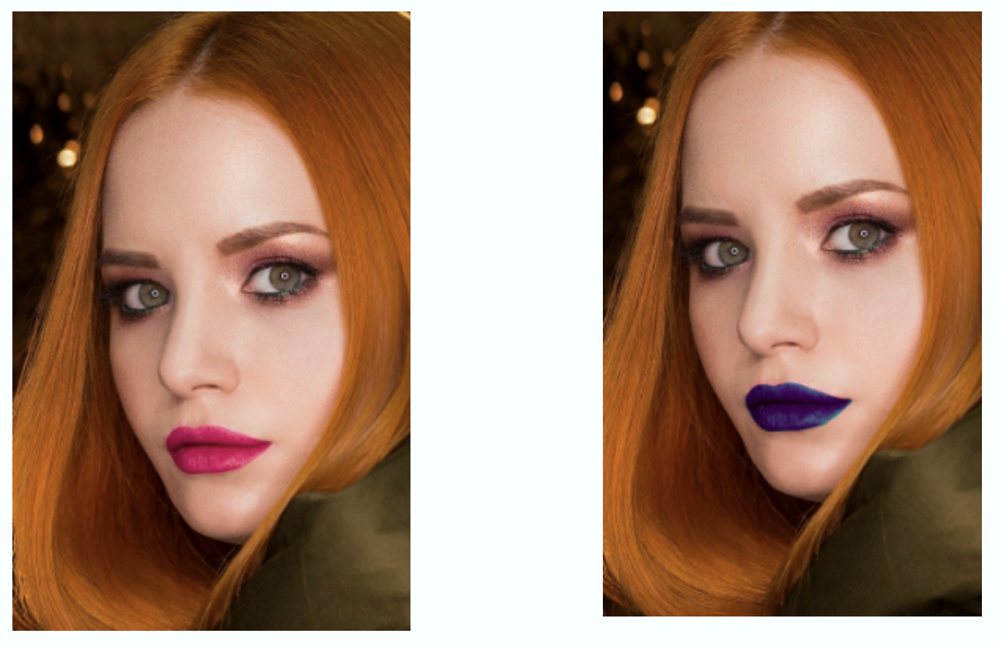
-
Descarga la imagen mujer.jpg que puedes ver aquí arriba.
-
Carga la imagen.
Abre el programa y desde el programa abre la imagen usando el menú Archivo > Abrir. Busca en tu ordenador la imagen, selecciónala y pulsa en Abrir.
-
Formatos de imagen.
Ahora necesitamos cambiarle el formato a la imagen, convertirla de JPG a PNG. Para ello vamos a Archivo > Exportar como y simplemente cambiamos el final del nombre de la imagen de
mujer.jpgamujer.png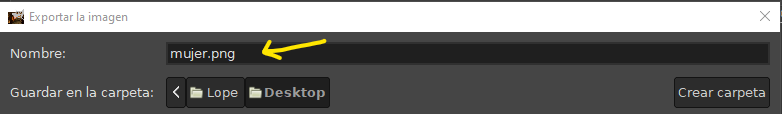
Formato imagen Pulsamos en Exportar, y en la nueva ventana que sale otra vez Exportar.
-
Cerramos la imagen sin cerrar el programa:
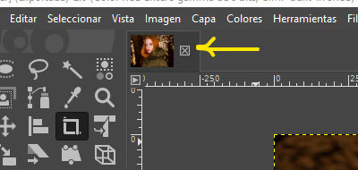
Cerrar imagen -
Archivo de trabajo.
Abre la imagen mujer.png, ve a Archivo > Guardar como
cambio-labios.xcfy pulsa en Guardar. -
Máscara rápida.
Ya tenemos todos los archivos que necesitamos para trabajar. Ahora comenzaremos a seleccionar el área con la que queremos trabajar, es decir, los labios. Para ello vamos a activar una utilidad que se llama Máscara rápida. La activamos desde el menú Seleccionar > Activar máscara rápida.
Si te fijas, se habrá situado sobre la imagen una neblina roja. Eso es una máscara rápida. Todo lo que borres de esa capa roja será la selección con la que nos quedemos.
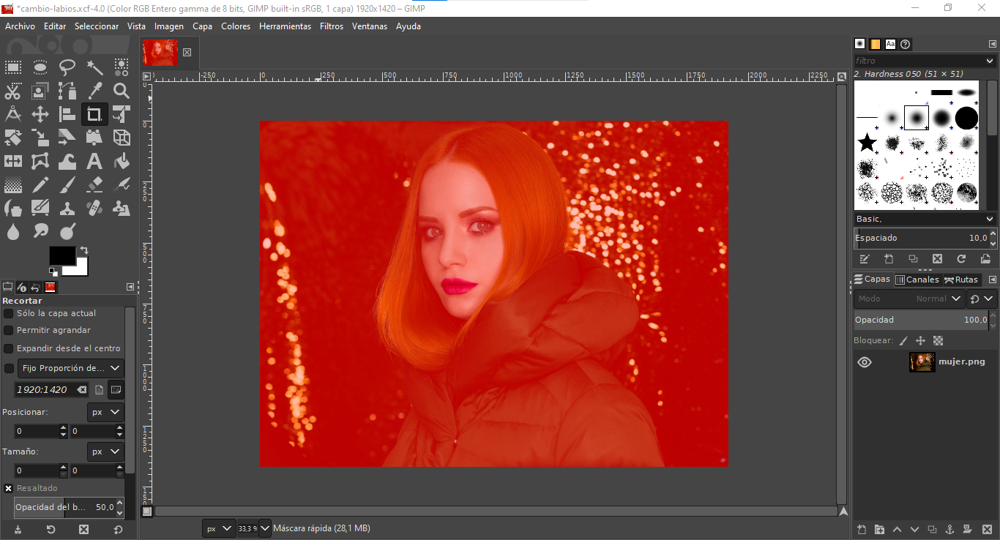
Máscara rápida Como nosotros vamos a trabajar de momento sólo con la zona de los labios, debemos usar el zoom para situar los labios en toda nuestra parte visible de trabajo.
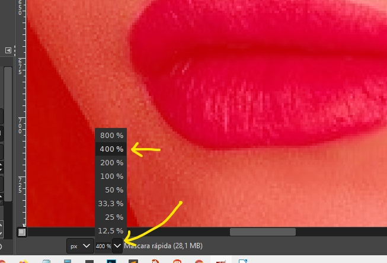
Zona de labios Ahora lo que debemos hacer es seleccionar la herramienta Goma de borrar, modificar la Dureza y ponerla al 100, y también el Tamaño (tamaño de la goma de borrar) para tener un tamaño de goma de borrar que nos permita ir borrando la capa roja sobre los labios:
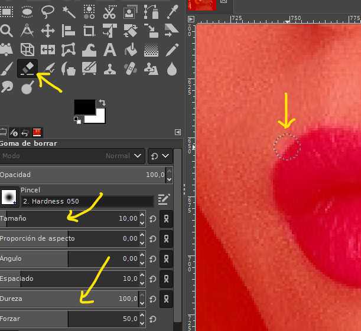
Goma de borrar -
Selección.
Ahora debemos ir borrando toda la parte de la capa roja que está sobre los labios:
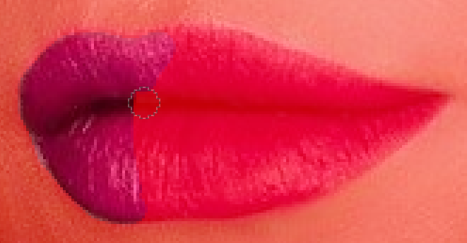
Labios -
Desactivar máscara rápida.
Una vez que lo hayamos hecho para toda la superficie que ocupan los labios, volvemos a colocar el zoom en su posición original para ver toda la imagen y desactivamos la máscara rápida yendo a Seleccionar > Activar máscara rápida:
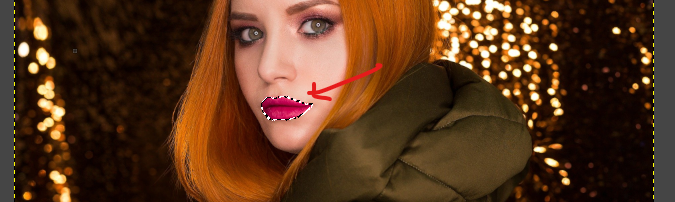
Activar máscara rápida -
Modificar el color.
Como puedes ver el área que hemos seleccionado queda rodeada por una línea discontinua indicando que esa parte de la imagen está seleccionada para que le apliquemos cambios.
Tan sólo nos quedaría modificar las propiedades del color de esa selección. Para modificar el color, una buena manera es modificando la cantidad de Rojo / Verde / Azul de esa parte de la imagen seleccionada.
Para hacerlo vamos al menú Colores > Niveles.
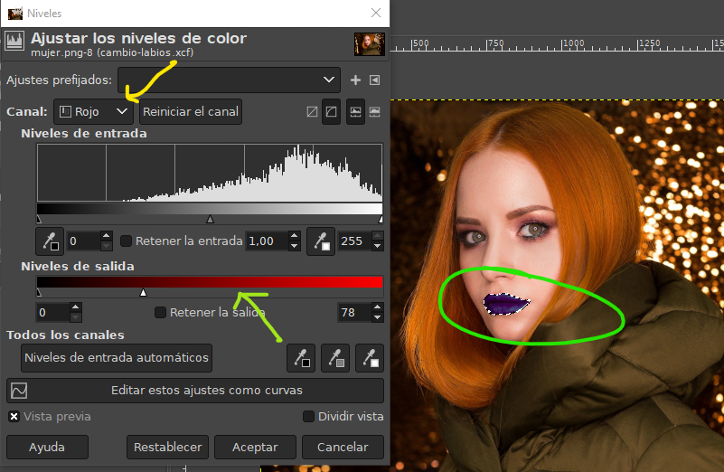
Colores > Niveles En esta ventana llamada Ajustar los niveles de color, seleccionamos cada canal (Rojo, Verde o Azul) y modificamos (deslizando a izquierda o derecha) su cantidad, así podremos observar cómo va cambiando el color de los labios de la mujer.
Cuando lleguemos a un color que nos guste pulsamos Aceptar en esta ventana. Y finalmente para dejar de seleccionar los labios pulsamos en el menú Seleccionar > Nada.
-
Guardar el trabajo.
Ya sólo nos quedaría guardar la imagen. Lo hacemos de dos maneras: primero guardando los cambios de la imagen editable (imagen .XCF), simplemente haciendo Archivo > Guardar.
Además, vamos a exportarla para entregársela al profesor. Nos vamos a Archivo > Exportar como y la guardamos en formato .png indicando en el nombre del archivo la modificación que hemos hecho. Por ejemplo, si en nuestra imagen le hemos puesto a la mujer los labios azules, la llamamos
labios-azules.png,labios-amarillos.png,pelo-rojo.pngopelo-verde.png. -
Cerrar el programa.
{kind=link}
ACTIVIDAD
- Cambia el color de labios a 2 imágenes y el color de pelo a otras 2 (por tanto, deberás buscar 4 imágenes distintas).
- Tienes libertad para elegir el nuevo color, aunque debe apreciarse con un simple golpe de vista el cambio.
- Al finalizar el trabajo debes tener 12 imágenes: las 6 originales, las 3 con el resultado de haberles cambiado el color de labios, y las 3 con el resultado de haberles cambiado el color de pelo.
- Sube captura de pantalla del antes y después de las imágenes a Aules.
Actividad
📝 AA5.3 Foto splash¶
(C.ESP2 / CE2.3 / IC1-3p)
El objetivo de esta práctica es aprender a crear fotos splash que es una técnica con la que conseguimos editar imágenes con efectos de coloración selectiva en el área de la imagen que queremos resaltar.
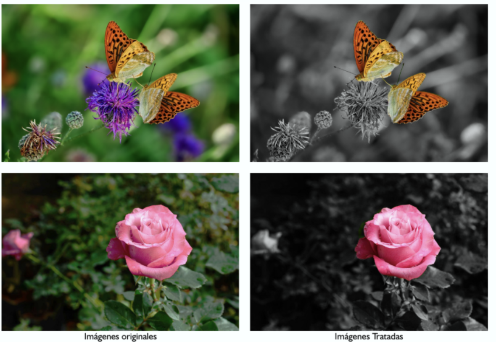
-
Descarga de imágenes.
Descarga desde classroom las imágenes rosas.jpg, mariposas.jpg.
-
Trabajo con la primera imagen.
Abre el programa y desde el programa abre la imagen llamada
rosas.jpgdesde el menú Archivo > Abrir. Busca en tu ordenador la imagen, selecciónala y pulsa en Abrir. -
Comprobación previa.
Asegúrate de que la barra de herramientas Capas, Canales y Rutas está visible:
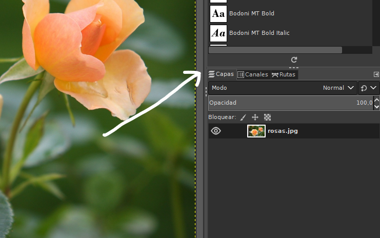
Capas, Canales y Rutas Si no lo está, puedes visualizarla desmarcando la opción de menú Ventanas > Ocultar empotrables.
-
Duplicar capa.
Ahora necesitamos duplicar la capa en la que está la imagen. Sobre la capa de la imagen pulsamos con el botón derecho del ratón y seleccionamos Duplicar la capa:
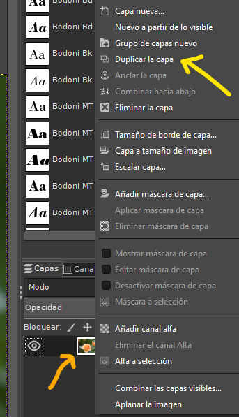
Duplicar la capa Ahora tendremos esto en el panel de Capas:
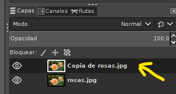
Capas -
Máscara de capa.
Con la nueva capa seleccionada pulsamos el botón derecho del ratón y seleccionamos Añadir máscara de capa:
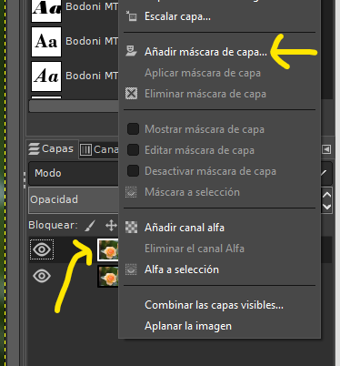
Añadir máscara de capa Y en la ventana que nos sale, seleccionamos Blanco y pulsamos en Añadir.
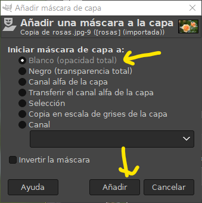
Seleccionamos Blanco Se nos habrá añadido la máscara (cuadrado blanco) junto a nuestra capa:
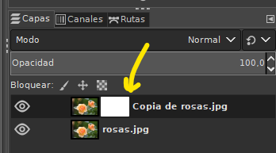
Cuadrado blanco -
Desaturar capa.
Ahora tenemos que quitarle el color a nuestra capa. Nos aseguramos de seleccionar nuestra capa (haciendo clic sobre el cuadradito de las rosas):
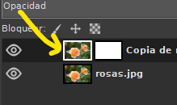
Desaturar capa Le damos a la opción de menú Colores > Desaturar > Desaturar y pulsamos Aceptar en la ventana que ha salido.
Como verás, nuestra imagen se ha puesto en blanco y negro.
-
Pincel.
Ya sólo nos quedaría proceder de forma parecida a lo que hicimos en la tarea anterior. Pinchamos sobre la máscara creada:
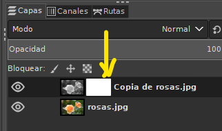
Pincel
{kind=link}
{kind=link}
Luego seleccionamos la herramienta Pincel:
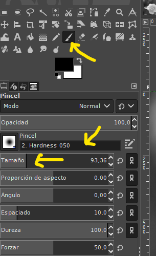
Nos aseguramos de que tenemos seleccionado el Pincel Hardness 050 y un tamaño que nos venga bien.
-
Color original.
Ya sólo nos queda ir pasando el pincel sobre la parte de la imagen a la que queremos devolverle su color original (las rosas). Debes ser cuidadoso para repasar sólo el área que nos interesa.
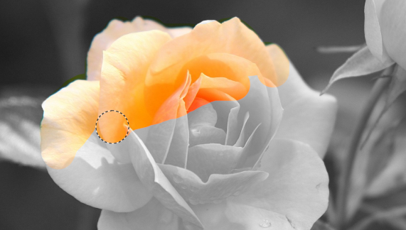
Color original -
Guardar resultado.
Cuando hayamos obtenido el resultado deseado, simplemente guardamos la imagen como ya sabemos en formato .xcf (si queremos volver a editar la imagen otro día), o la exportamos a .jpg (si creemos que no vamos a necesitar modificarla más o es la versión final que queremos entregar).
-
Cerrar el programa.
ACTIVIDAD
- Debes aplicar el efecto foto splash a 4 imágenes: las 2 que se proporcionan en el ejercicio (rosas y mariposas), y otras dos de tu elección.
- Tienes libertad para elegir qué zona colorear en las dos imágenes que has elegido tu.
- Al finalizar el trabajo debes tener 6 imágenes: las 2 que te dio el profesor modificadas, las 2 originales que tu has elegido, y las modificaciones de estas dos últimas.
- Sube captura de pantalla del antes y después de las imágenes a Aules.
Actividad Refuero
🔨 AAR5.4 Color¶
(C.ESP2 / CE2.3 / IC1-3p)
-
Imagen 1
- Descarga la siguiente camiseta.jpg.
- Modifica su color. Puedes ayudarte con el vídeo.
- Una vez hayas realizado el ejemplo, intenta hacer lo mismo con la imagen camiseta 2. El color puedes elegirlo tú.
- Guarda la nueva imagen formato pdf.
-
Imagen 2
- Abre la fotografía Color-BN1.jpg.
- Modifica su color tal como se muestra en el vídeo.
- Una vez hayas realizado el ejemplo, intenta hacer lo mismo con la imagen Color-BN2.jpg. Debes hacer que se quede el pelo en color y el resto de la imagen en blanco y negro.
- Guarda la nueva imagen formato pdf.
-
Imagen 3
- Descarga la siguiente imagen de sumo.
- Utiliza la herramienta del menú: “Colores -> Desaturar” para convertirla en blanco y negro.
- Guarda la nueva imagen formato pdf.
- A continuación, utiliza la herramienta del menú: “Colores -> Colorear” para convertir la imagen a cualquier otra tonalidad de colores (sepia, azules, etc).
- Guarda la nueva imagen formato pdf.
- Por último, utiliza la herramienta del menú: “Colores -> Tono y Saturación” para modificar un determinado color de la imagen.
- Guarda la nueva imagen formato pdf.
-
Imagen 4
- Descarga la siguiente imagen del coche.
- Utiliza la herramienta del menú: “Colores -> Tono y Saturación” para modificar un determinado color de la imagen y que quede como la siguiente imagen:
- Guarda la nueva imagen formato pdf.
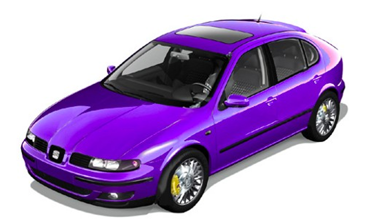
Paleta Gimp
{kind=link}
{kind=link}
{kind=link}
{kind=link}
{kind=link}
{kind=link}
Entrega: Crea un documento writer con evidencias del antes y después de cada imagen. Además, debes subir todos los pdfs creados.